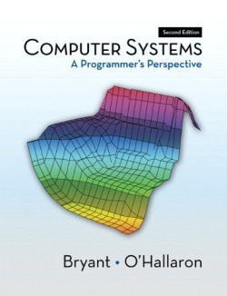
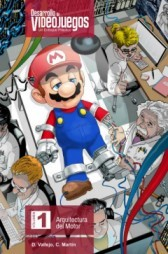

<-- Back to home
Estos son algunos de los libros y recursos que considero útiles e interesantes en cuanto a programación se refiere.
C: How to Program, 7th Edition

Este libro te enseña a programar en C99 y C11, según avanza por las distintas librerías explica malas prácticas de versiones anteriores a
la del C99 y como estas se pueden evitar en C11. Cuando leí este libro me vino perfecto para poder asentar una buena base de C y entender
cómo no mezclarlo con C++. Antes de entrar en materia los libros de Deitel dan una introducción al mundo de la IT, esta es bastante básica
y se puede saltar sin problemas. Al acabar de explicar C hace una introducción a C++ cuyo objetivo es mostrar que C y C++ moderno son lenguajes
totalmente distintos. Tiene muchos ejercicios que yo recomiendo intentar hacer con solo el enunciado ya que de esta forma al acabar el libro
tienes soltura de sobra.
Introducción al cracking con OllyDBG desde cero
Estos tutes de Ricardo Narvaja son perfectos para iniciarse en el reversing y el cracking, además pueden ser todo un reto
porque para poder descomprimir algunas lecciones necesitas resolver la anterior. Es verdad que hay un .rar
sin contraseñas pero esa versión no contiene los CracksMe y aunque los busque por Google no te sirve porque
la mayoría están modificados por el mismo Ricardo. El curso ya tiene sus años, lo empezó en Diciembre de 2004
y se centra en programas hechos con Visual Basic, en mi caso lo dejé en el punto donde termina el reversing (por el tute 26).
Es muy satisfactorio conseguir entender como encripta un Crackme las contraseñas leyendo el asm.
CODE: The Hidden Language of Computer Hardware and Software

Este es el libro que ojalá me hubiesen recomendado al empezar la Ing Informática, explica cómo se inventaron los computadores hasta
como funcionan hoy en día. Empieza desde la explicación Física de que es una corriente y su aplicación en los circuitos para ir
construyendo cada vez máquinas más complejas. Además de la parte técnica cuenta la historia de las personas que hay detrás de los
computadores con datos super interesantes. Me parece que este libro es una pasada y si además no entiendes a bajo nivel como funcionan
los PCs seguro que se te hace aun más increíble de leer.
Computer Systems A programmer's Perspective

Lo que buscaba era aprender a optimizar código C. Este libro explica cómo el código C se traduce a asm de x86
en la arquitectura de Intel, su objetivo no es enseñarte asm sino que comprendas que al conocer el bajo nivel
de un computador puedes optimizar cada bit que este usa. Tiene ejercicios de sobra para que vayas aprendiendo todo el temario.
Blipi
Es un canal de Youtube dedicado al hacking de juegos y la programación, en su momento me hizo replantearme por completo
la programación. Es una pasada ver su forma de abordar el reversing y de pensar a la hora de resolver problemas.
Tiene varias listas de reproducción donde puedes aprender a reversear videojuegos online. Lo recomiendo al 100%.
Desarrollo de Videojuegos. Un enfoque Práctico.: Volumen 1

En el punto 4 explican patrones de diseño a mi parecer bastante bien. En el punto 5 aunque tienes una introducción a algunas de
las estructuras de datos clásicas de la STL (cola, stack, etc) y se hace bastante interesante porque explica detalles al estilo:
¿Cómo está implementada una cola?, ¿Porque en teoría la estructura X es más eficiente pero por implementación es mejor usar Y?, etc.